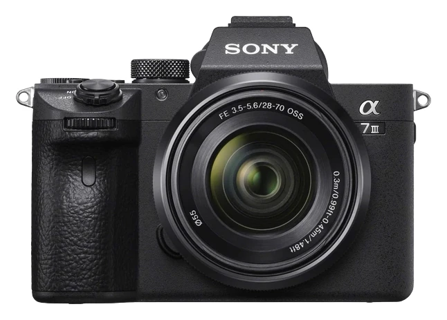
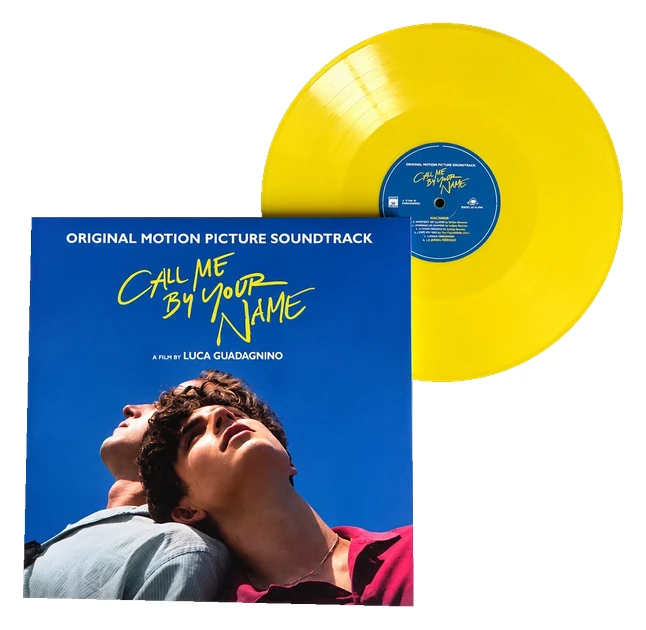
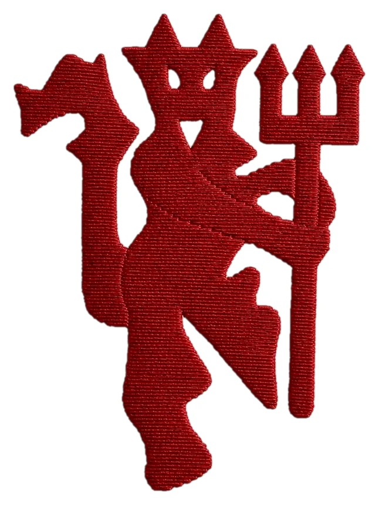
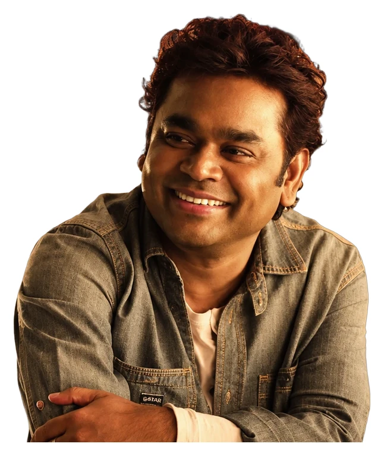
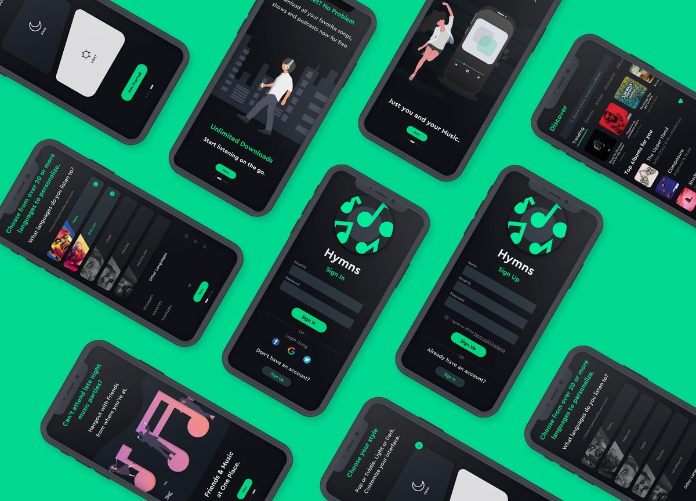
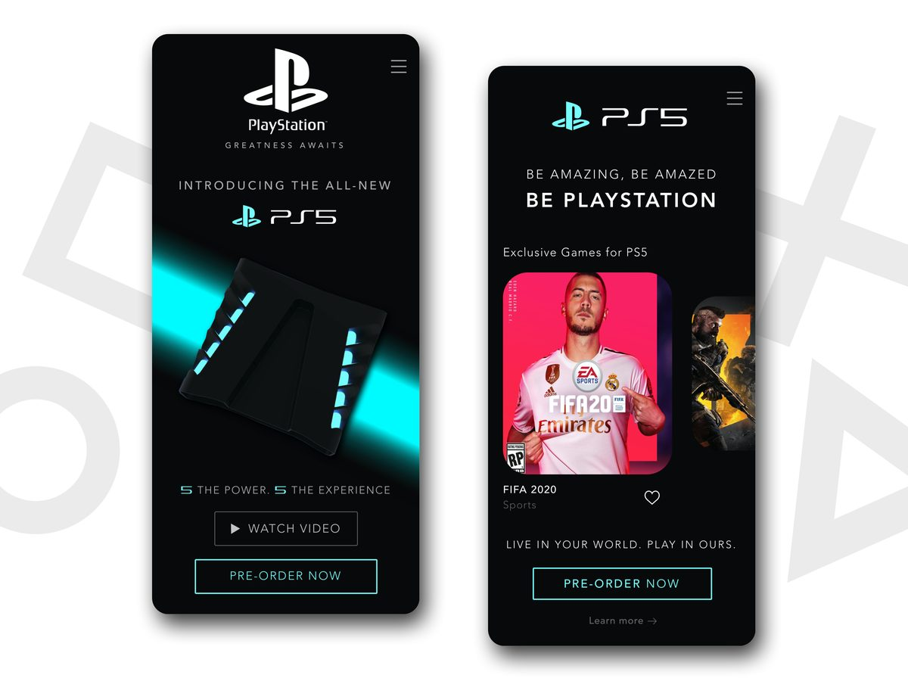
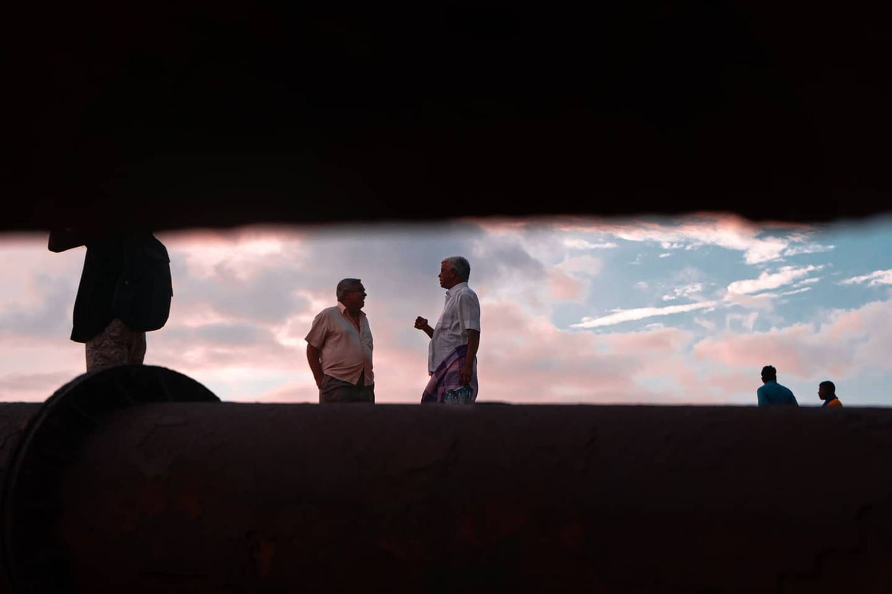

Hello, I’m Kaushik .I design. For the better.
I design products that look good and feel great to use.
Product Designer · Product Builder
Projects
Quick Automations
An instant automation framework built for conversational support inside Freshdesk, executing workflows in as little as 30 seconds across WhatsApp, Web Chat, and social DMs, helping teams reduce dropped chats by 91%.
Conversation · #48213Cameron Williamson · Web chatHi, I booked a cab to the airport yesterday and the driver was 30 minutes late. I missed my flight. Can I get a refund?I'm really sorry to hear that. Let me pull up your booking.Hi Cameron, ofcourse we can look into this. Basically its not our fault but whatever,I completely understand how frustrating this is, just share the booking ID and I'll definately check the refund.✦Tone · EmpathySound more reassuringThis line may come across as dismissive to an upset customer.Quality Coach
An AI-powered real-time coaching system built inside Customer Service Suite, helping support agents improve grammar, tone, and clarity while actively replying to customers, increasing CSAT by 18 points during busy shifts.
About
Designer. Storyteller.
Forever curious.
Hey! I’m Kaushik.
I’m a Product Designer who likes turning messy problems into simple, useful products that make people go, “wait, that was surprisingly easy.”
I started out designing posters and visual creatives in college because I liked making things look cool. Along the way, I became curious about why things worked and how they could work better. That curiosity pulled me into product design, and I’ve been hooked ever since.
Over the years, I’ve worked across B2C and SaaS, designing products that help people get things done better. More recently, I’ve been exploring AI-powered products and how to make complex technology feel simpler, more intuitive, and human.
When I’m not designing, you’ll find me behind a camera, rage-queuing Valorant, watching anime, or going down random rabbit holes.




Journey so far
MultiplierSenior Product DesignerJun 2026 — Present
- Sautéing veggies, something good’s simmering…
Freshworks2x Award WinnerSenior Product DesignerSep 2022 — May 2026
- Initiated and led Quick Automations for high-intensity real-time channels, reducing agent effort during peak traffic. Read the case study →
- Led the end-to-end rollout of Freddy AI across CX products: admin experiences, onboarding flows and 5+ Copilot features like real-time translation, proactive quality coaching and context-aware reply suggestions.
- Crafted a unified experience for Freddy Insights, a conversational AI platform that gives admins actionable insights.
- Introduced omni-channel business hours across email, chat, voice and messaging, simplifying configuration for global admins.
- Defined ultra-granular SLAs, configurable down to 30 seconds, and scalable automation workflows for reply timelines across channels.
- Reworked onboarding across CX products with the Product-Led Growth team, cutting drop-off by 45% within a month.
- Managed and implemented the Freddy and Freshworks design systems for AI and CX products.
- Awards: Exceptional Individual Performer (Q3 2023) and Above and Beyond (Q3 2025).
PickyourtrailProduct DesignerNov 2021 — Aug 2022
- Solved pre- and post-booking problems in the Pickyourtrail app.
- Led design of a stealth corporate travel app, with early adoption by Chargebee and Rocketlane.
- Revamped Plato, the internal CRM used by travel and sales consultants.
Toolkit
Good words from great people
I’ve had the opportunity to work with and mentor Kaushik across multiple ventures. He is a deeply committed and detail oriented designer who quickly understands context and consistently delivers work that aligns closely with the vision. What sets him apart is his speed, ownership, and willingness to go beyond the brief. A dependable designer for any product leader looking for someone who executes with focus and initiative.
Working with Kaushik was a game-changer. He brings clarity to complex problems and turns scattered ideas into thoughtful, easy-to-use product experiences that teams and users genuinely appreciate.
I had a memorable experience working with Kaushik on Sokka. No matter how complex or vague the ask is, he always tries to simplify it and deliver what’s needed to push the quality of the project. A thoughtful designer and genuinely great person to collaborate with.
What I’ve always appreciated about Kaushik is how he approaches complex product problems. He’s curious, asks the right questions, and is able to turn a messy set of requirements into something clear and intuitive for the user.
I had the opportunity to work closely with Kaushik while building Sokka, he is someone who brings both creativity and thoughtfulness to his work. He has a great ability to understand things from the user’s perspective, simplify complex problems, and turn ideas into intuitive product experiences. Beyond his design skills, he’s genuinely curious, collaborative, and great to work with. I’ve always enjoyed seeing his ideas come to life.
Give Kaushik an ambiguous problem and he’ll bring structure to it. He’s thoughtful about the details, comfortable working through uncertainty, and takes real ownership of getting the experience to a high bar.
Gallery of trying

Hymns onboarding ↗Filmfare 2021 finalistShivanum Mohiniyum · editor
PS5 app concept ↗
through the gapWhat I’m currently listening to
Drag or tap a record to play